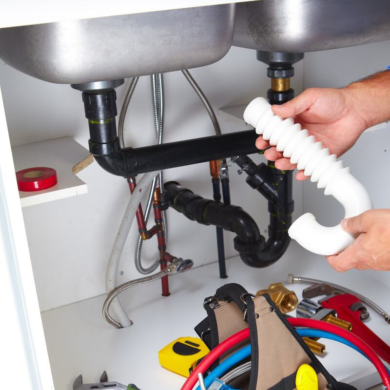

מוצא את מה שאחרים פספסו.Finds what others missed.
מכשור מתקדם מאתר את מקור הנזילה מהר ובדיוק, בבית ובגינה.Advanced equipment pinpoints where a leak starts, quickly and precisely, at home or in the garden.
- מקור הנזילה, לא רק הכתםThe source, not just the stain
- אבחנה מדויקת לפני שנוגעיםA precise diagnosis before any work
- סבלנות, והסבר לכל שאלהPatience, and an answer to every question
הפצ׳ במקום, בול.The patch, right on the spot.
מצלמה בתוך הצינור.A camera inside the pipe.
מערכת מצלמות משוכללת מראה בדיוק איפה הבעיה. בלי לנחש.An advanced camera system shows exactly where the problem is. No guessing.
מתקנים מבפנים. בלי לשבור.Fixed from inside. Nothing broken.
תיקון צנרת ביוב בשיטת אל־הרס, והשטח נשאר כמו שהיה.Sewer pipes repaired the no-dig way, and the ground stays as it was.
וואטסאפ לבן יעקבWhatsApp Ben Yaakovמה בן יעקב מתקן.What Ben Yaakov fixes.
מהברז בבית ועד הביוב שמתחת לרצפה.From the tap indoors to the sewer under the floor.
-
נזילה בביתLeaks at home
איתור המקור, גם כשאחרים לא מצאו.Found at the source, even when others couldn’t.
-
נזילה בגינהLeaks in the garden
מאתרים, מתקנים, והשטח חוזר לקדמותו.Found, fixed, and the ground put back.
-
ביוב בלי הרסSewer, no digging
פצ׳ מבפנים, בדיוק איפה שצריך.A patch from inside, exactly where it’s needed.
-
שורשים בצנרתRoots in the pipe
חותכים את השורשים, והביוב זורם שוב.The roots ground away, the sewer flowing again.
-
24/7, מיד24/7, right away
זמינות מיידית, גם בזמן אזעקות.Right away, even while the sirens sound.
מה הלקוחות כותבים.What customers write.
4.7 מ-74 ביקורות בגוגלfrom 74 Google reviews
״הגיע לעבוד אצלי בנכס עם מכשור מתקדם, ממש ׳כמו של קוסמים׳, ובאמצעותו איתר את הנזילה בקלות ובמהירות – דבר ששני בעלי מקצוע קודמים לא הצליחו לעשות כלל.״
“He came to my property with advanced equipment, really ‘like magicians’ have, and with it found the leak easily and quickly, something two professionals before him couldn’t do at all.”
״הזמנתי את בן יעקב לתיקון צנרת ביוב בשיטת ׳אל הרס׳. פגשתי מקצוען אמיתי, מרוכז מאוד בעבודה, יסודי. עלה על הבעיה ע״י מערכת מצלמות משוכללות.״
“I called Ben Yaakov to repair a sewer pipe with the ‘no-dig’ method. I met a true professional, very focused on the work, thorough. He found the problem with an advanced camera system.”
״הגיע מצויד במכשור מקצועי, איתר במהירות ובדייקנות את מקור הנזילה בגינה. העבודה נעשתה ביעילות, בניקיון ותוך החזרת השטח לקדמותו.״
“He came equipped with professional gear and quickly, precisely found the source of the leak in the garden. The work was efficient and clean, and the ground was put back the way it was.”
איפה זה אצלכם?Where is it at yours?
בחרו את המקום בבית, ובן יעקב יקבל הודעה מוכנה.Tap the spot in the house and Ben Yaakov gets a ready message.
24/7, כל יום.24/7, every day.
בן יעקב זמין גם בלילה, גם בשבת.Ben Yaakov is available at night and on Saturdays too.
- כתובתAddress
- משה שרת 69, חיפה69 Moshe Sharet St, Haifa
- טלפוןPhone
- 055-953-8144
- שעותHours
- עכשיוNow